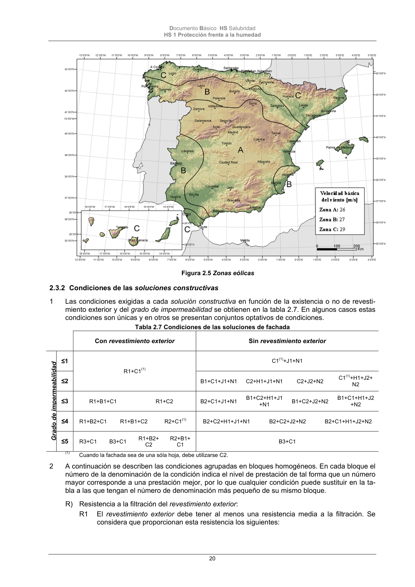

DB-HS · Fragmento de PDF p19 · versión 2022-06-14 · capa oficial
Formatos: JSON compacto · Markdown · PDF fuente
Ámbito del documento · texto del ámbito · documento y tablas
ID técnico a0060 · PDF pág. 19-20 · jerarquía no validada por persona · no es capítulo: sin_linea_de_encabezado · padre: raíz · literal original en el contenido: «15»
15 V3 V3 V3 V2 V2 V2 16 - 40 V3 V2 V2 V2 V2 V1 41 – 100 (1) V2 V2 V2 V1 V1 V1 (1) Para edificios de más de 100 m de altura y para aquellos que están próximos a un desnivel muy pronunciado, el grado de exposición al viento debe ser estudiada según lo dispuesto en el DB-SE-AE. Documento Básico HS Salubridad HS 1 Protección frente a la humedad 20 Figura 2.5 Zonas eólicas

PDF fuente redistribuible: copia fiel enlazada en esta página (SHA256 verificado).